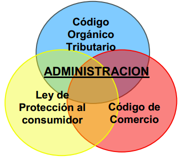

Justificación desde el marco legal de la República Bolivariana de Venezuela
Los pueblos del mundo evolucionaron a través de la organización que
sus sociedades alcanzaron al establecer normas de convivencia, al
cohesionarse culturalmente, en fin al identificar los factores comunes
que generan lo que se conoce como identidad.
Al pasar el tiempo esas sociedades en su mayoría se han
convertido en “Estados” que ocupan un determinado espacio geográfico
llamado país, estableciendo a su vez una declaración de principios a
los que colectiva e individualmente se adhieren, naciendo así la
constitución de la República , o carta fundamental.
La constitución establece principios fundamentales, sobre los que
operan un conjunto de Leyes que permiten de forma clara conocer las
normas que aplican para los distintos elementos que conforman la
sociedad.
El Movimiento Scout, también parte de un compromiso “La Promesa Scout”, y opera en un marco de valores señalados en la “Ley Scout”.
Como podemos observar, el decidir ser miembro del Escultismo es
aceptar libremente la alegría de ser Scout. Entre los múltiples matices
que caracterizan a la Asociación de Scouts de Venezuela, es que el
marco social actúa conforme a la Constitución y apegada a todas las
Leyes de la República.
La Administración como concepto, indistintamente de la organización
de la que se hable, es un espacio, donde convergen directamente un
importante número de Leyes, que le dan forma y que le establecen,
responsabilidades, deberes, derechos, alcances y otros aspectos.
En nuestro caso evidentemente somos igualmente impactados por todas las leyes y en especial: Código Orgánico Tributario, Ley de Protección al consumidor y el Código de Comercio.

Cada dada una de esas leyes y códigos establecen un conjunto de preceptos, que rigen nuestras actuaciones, estableciendo así:
1 Formas
2 Procesos
3 Tiempos
4 Condiciones
5 Requisitos
Que son inamovibles, de obligatorio cumplimento en términos de Ley,
para todos los ciudadanos, y con mayor diligencia, exactitud, pulcritud
y responsabilidad por los integrantes del Movimiento Scout.
De igual manera por la naturaleza de la administración, como una
disciplina social de carácter descriptivo y analítico, tiene unos
principios que le son propios, conocidos a nivel nacional como:
Principios de Contabilidad
Generalmente Aceptados (PCGA), que se expresan finalmente en la
Declaración de Principios de Contabilidad (DPCs).
La Asociación de Scouts de Venezuela, como escuela de ciudadanía, hace prevalecer, tanto el: Marco Legal de la República, como la Disciplina de la Administración y sus principios.
De esta forma este sistema está basado en postulados y definiciones,
procedimientos, prácticas y formas de uso común y ajustado a derecho.
Todo lo anteriormente descrito obtiene un valor agregado por nuestra
condición de ser Scout, y tener como principal “Activo” de nuestra
institución el honor ,“La Palabra Scout”, la cual es intangible,
nuestro principal deber como usuarios de este sistema, es realizar la
transición de esa confianza depositada en nosotros, en documentación
respaldada objetiva y verificable, que le permita a cualquier miembro
interno o agente externo comprobar el día que bien lo tenga hacer,
nuestra “Palabra”, enalteciendo así la misma.
“Digno de confianza significa: sobrio,
puntual, veraz, que se le puede confiar dinero y secretos, y que
probablemente no cometerá ni tonterías ni errores; que es leal a sus
superiores tanto como a sus subordinados y que desempeñara su trabajo
ya sea que se le observe o no."
Baden-Powell “Roverismo hacia el éxito”.